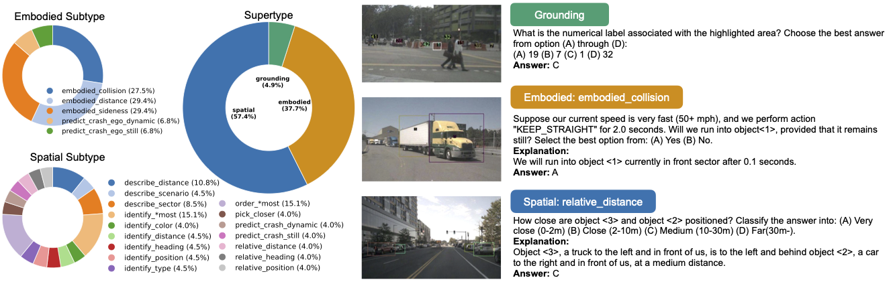
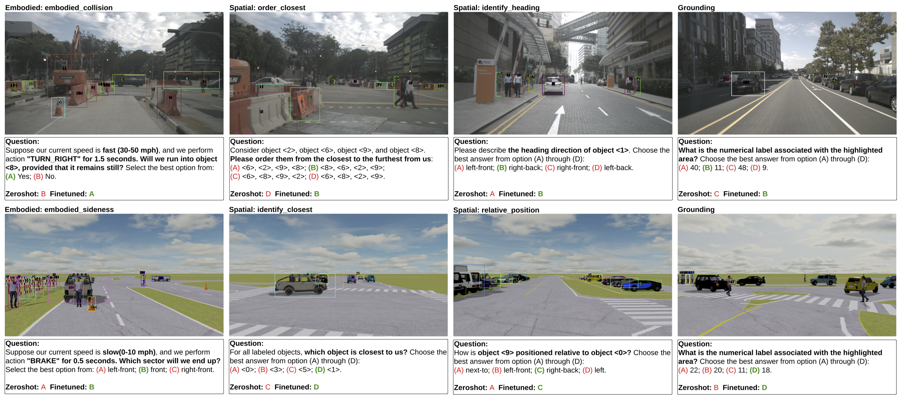
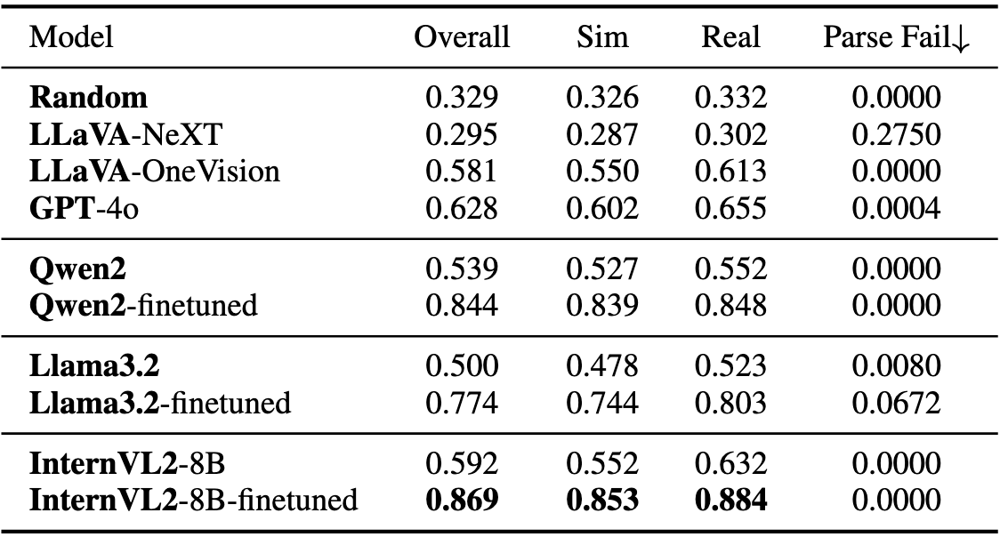
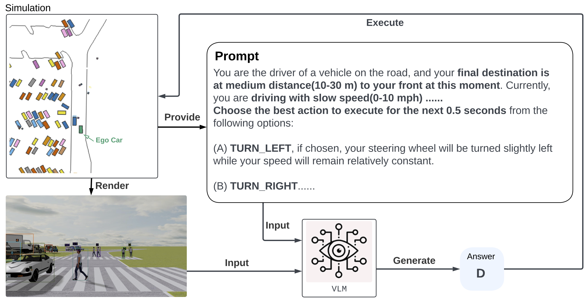
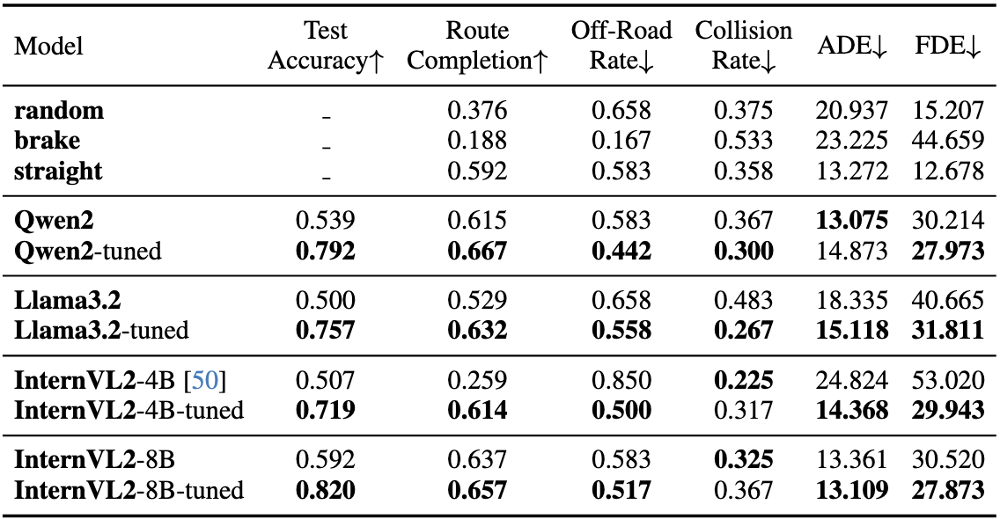

Embodied Scene Understanding for Vision Language Models via MetaVQA
CVPR 2025
Weizhen Wang , Chenda Duan , Zhenghao Peng , Yuxin Liu , Bolei Zhou
University of California, Los Angeles

-
TL,DR: MetaVQA is a holistic benchmark for evaluating and enhancing general-purpose VLM as embodied agent.
Design Choice

Dataset Compositions

Left: Distribution of the question types. Right: Example for each question supertype.
MetaVQA Dataset consists of a large corpus of multiple-choice questions, which contains 4,305,450 questions using 442,102 annotated frames extracted from 400 nuScenes scenarios and 6,900 Waymo scenarios covering 59,682 seconds (16.5 hours) of driving log. The questions can be categorized into three supercategories: spatial questions, embodied questions, and grounding questions. The former two supercategories cover the two facets of embodied scene understanding: spatial awareness and embodied understanding, and the latter one diagnoses VLMs' capabilities to associate marked objects in the observation with textual referral.
Learned Embodied Scene Understanding


Improved embodied scene understanding after fine-tuning of InternVL2-8B on the withheld training set. The VLM demonstrates improved spatial understanding and embodied knowledge after learning the MetaVQA Dataset. In addition, the model attains better grounding capability.
VQA Benchmarks


Visual question answering benchmark. Performance comparison of different models on overall, simulation-only-part, and real-only-part of the withheld test sets. The parsing failure rate is also provided. Models report consistent improvements after fine-tuning, with InternVL2-8B achieving the best performance.
Close-Loop Evaluation

Formulation of closed-loop evaluation. At every five simulation steps (0.5 seconds wall time), the evaluated VLM is provided with annotated observations and current navigation command. The chosen action will be fed into the simulation.

Quantitative result of closed-loop evaluation. Despite not being directly trained on the driving task, VLMs report improvements in closed-loop metrics after learning the MetaVQA Dataset, in addition to better VQA accuracy. This correlation suggests that the MetaVQA Dataset contains generalizable embodied knowledge that could be easily learned and transferred to the downstream application domain (in this case, self-driving).
Reference
@article{wang2025metavqa,
title={Embodied Scene Understanding for Vision Language Models via MetaVQA},
author={Wang, Weizhen and Duan, Chenda and Peng, Zhenghao and Liu, Yuxin and Zhou, Bolei},
journal={arXiv preprint arXiv:2501.09167},
year={2025}
}